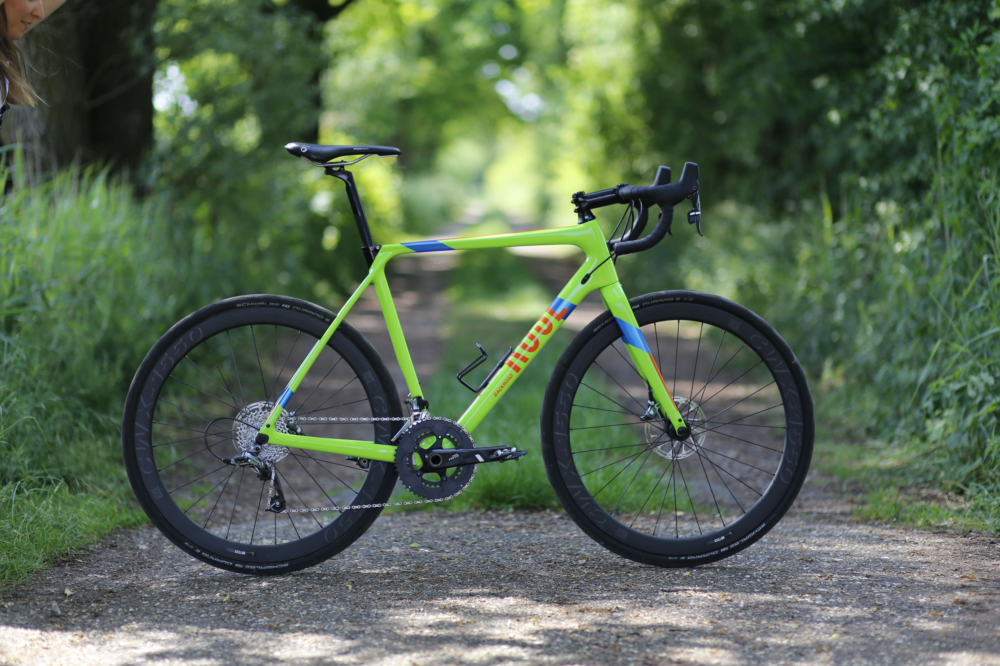

P1- Encontre um espaço adequado para montar sua bicicleta.Reúna as ferramentas necessárias, como chaves Allen, chave de boca, bomba de ar e graxa.
P2- Posicione o quadro em um suporte ou superfície estável.Insira o canote do selim no tubo do selim e aperte-o.
Fixe o garfo dianteiro no tubo de direção.
P3- Monte o conjunto de direção no garfo dianteiro.
Ajuste os rolamentos e aperte as porcas corretamente.
P4- Insira o eixo da roda traseira no quadro.
Coloque as rodas no lugar e aperte os parafusos.
P5- Posicione o selim no canote.
Ajuste a altura do selim e aperte o parafuso.
P6- Deslize o guidão no tubo de direção.
Ajuste a posição do guidão e aperte os parafusos.
P7- Rosqueie os pedais nos braços do pedivela.
Lembre-se de que o pedal direito tem rosca à direita e o pedal esquerdo tem rosca à esquerda.
P9- Verifique todas as conexões e apertos.
Certifique-se de que os freios estejam funcionando corretamente.
P10-Use uma bomba de ar para encher os pneus até a pressão recomendada.
Dê uma volta curta para verificar se tudo está funcionando bem.Ajuste conforme necessário e aproveite sua nova bicicleta!